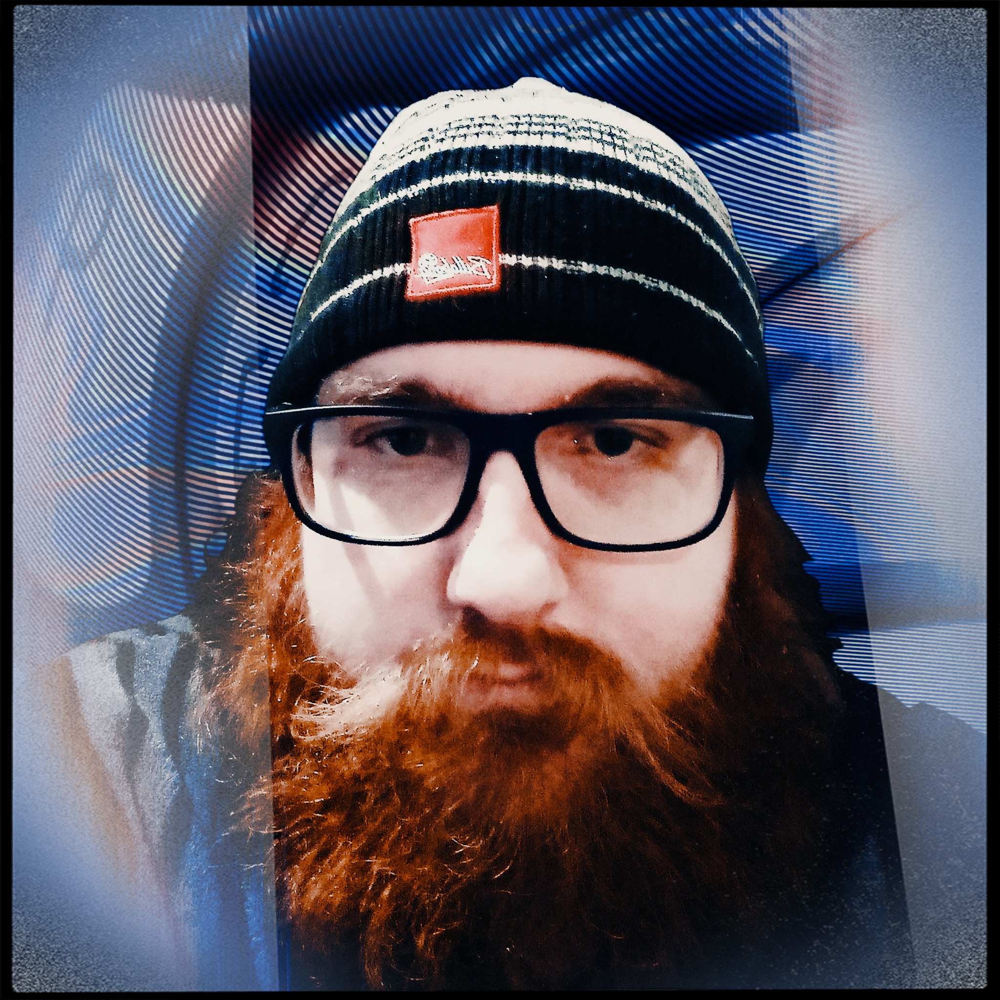

Meet the Team

Most teams of developers have a specific product they work on and sell. At DunnoYet, its literally that… Our service is to create the best product to suit customer needs. We work with our customers from start to finish to deliver exactly what the customer wants. So, what are we building? Well… ‘Dunnoyet’ until we know what it is you want.
This page introduces the members of the team, displaying name and student number, a link to individual websites, and a photo alongside an introduction. Following decribes the roles within the team, information on pervious team work and the Tools we have used along with links to our website, GitHub and Trello.
"Hi, I'm Thomas.
Born and raised in Australia, my hobbies mainly include board games and video games. Interest in IT is focused on web development and cloud computing. Experience includes building web applications to meet clients' requirements on multiple platforms, including desktop, mobile and web."

“Hi I’m Jo,
I’m 36, with 2 kids, a 14yo son and 10yo daughter. I have previous experience with Advanced First aid and wanted to be a paramedic, until medical conditions intervened. My passion in the IT industry is to provide customers or clients the best experience. I’m keen to learn DevOps, which I am also studying with IBM through Coursera; and Analytics.”
Roles
Have you defined any specific roles for your project?
With only 2 members of the team, roles were decided unanimously in relation to the capabilities of the members. Following will describe the role of each member and justify the role to that member.
Jo: - Project Leader
Given the idea was Jo’s from the beginning, the role of Project Leader was initially unanimous in agreement. Further, outside of RMIT, Jo is also currently studying Introduction to DevOps with IBM. The knowledge Jo has brought over from learning DevOps methods has allowed the team to grasp a firm idea of how our project should come together. Jo has also shown ability at fantastic leadership in previous group work efforts.
Thomas: - Project Developer
Thomas, having previous experience and knowledge of programming and project development again sought a unanimous decision that Thomas would be the Project Developer. Given that Thomas has skills in languages, tools and processes required to develop our project from start to finish. Further, Thomas has desire to develop web-based software which gave the project its initial direction, allowing design progression as well as a development plan.
Group Processes
How well did your group work together in Assignment 2?
Unfortunately, our team had a couple of major hiccups, but with a lot of effort 2-3 of us pulled it off in time. While we thought our group was getting along well, abruptly our team leader left the group without notifying anyone within the team. This caused chaos in the last week of the assignment, while some were reluctant to pick up extra work, one in the final days did put in extra effort, unfortunately another that had accepted a bigger than original workload, in final 2 days was uncontactable and a large portion of content was not uploaded therefore inaccessible to the team. between an effort of 3 we got the missing work completed. The last 2-3 days was hectic for 2 members with the help of a 3rd in remaining hours. Overall, what looked to be a group working well collapsed in remaining week and half the team picking up for the other half.
Changes in process for Assignment 3?
Moving on for Assignment 3 there are big changes. Following our experience, Jo contacted Anthony requesting for herself and Thomas to continue the remainder of the course as a pair. This request was granted; therefore, this assignment will be completed by Thomas and Jo together, with a new Project Idea moving forward. We will be utilizing teams appropriately, using GitHub appropriately between us, Jo will learn new tools to assist in accomplishing requirements and we will utilize organizational tools.
Tools
Description:
enter description here
Our GitHub Repository: https://github.com/JustAHack/IIT-DunnoYet-A3
Trello: https://trello.com/b/Pro2V2fI/dunnoyet